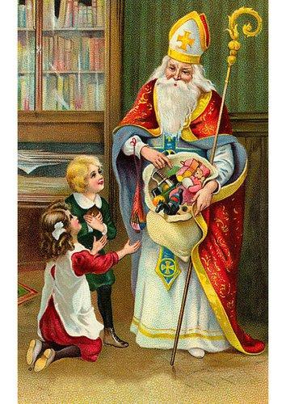
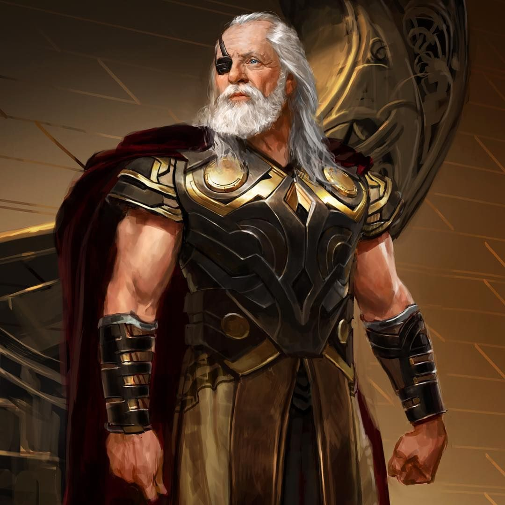

Uma das figuras mais populares do Natal é o Papai Noel, um velhinho barbudo e barrigudo que se veste de vermelho. Na tradição natalina, o Papai Noel é o personagem que traz presentes para as crianças bem-comportadas na véspera do Natal. O bom velhinho é conhecido por voar em seu trenó puxado por oito renas, suas ajudantes na tarefa de entregar presentes em todos os lares.
A lenda diz que o Papai Noel passa de casa em casa, desce pela chaminé e coloca os presentes dentro de meias, que são depositadas perto da lareira, ou debaixo da árvore de Natal. A lenda afirma ainda que o Papai Noel reside no Polo Norte, mas outras versões da história afirmam que ele reside na Lapônia, região localizada no extremo norte da Finlândia.
A origem histórica do Papai Noel está diretamente relacionada com São Nicolau de Mira, também chamado de Nicolau Taumaturgo, um bispo cristão que viveu entre os séculos III d.C. e IV d.C. São Nicolau viveu na Ásia Menor (região que corresponde, atualmente, à Turquia) e ficou conhecido por sua generosidade. Esse religioso era filho de uma família abastada e, após a morte prematura de seus pais, herdou a riqueza de sua família. Passou, então, a utilizar a herança para distribuir presentes entre os pobres, sobretudo para as crianças órfãs.
A fama de São Nicolau dentro da Igreja Católica é muito grande. A figura do Papai Noel assemelha-se muito com a descrição desse bispo: um velhinho de barba branca e de trajes vermelhos. A devoção a São Nicolau é muito forte em alguns lugares, como na cidade italiana de Bari. Além disso, esse santo católico tornou-se o padroeiro dos pobres, dos órfãos e de algumas nações, como Grécia e Rússia.
A figura do Papai Noel, no entanto, não remete somente à figura cristã de São Nicolau. Existem aproximações entre esse personagem e Odin, o deus mais poderoso da crença religiosa dos nórdicos. Na tradição nórdica, Odin é representado da mesma maneira que o Papai Noel: um idoso barbudo e grisalho.
Segundo a crença dos nórdicos e dos germânicos, Odin (chamado de Wotan pelos germânicos) era responsável por entregar presentes para as pessoas durante o Yule (ou Jól), festival que acontecia durante o solstício de inverno entre os nórdicos. Segundo a lenda, para realizar essa tarefa, Odin ia montado em seu cavalo de oito patas, Sleipnir. Aqui temos uma referência clara às oito renas do Papai Noel. Além disso, Sleipnir, assim como as renas, sobrevoava os céus para entregar os presentes.
Os nórdicos acreditavam que Odin passava de casa em casa entregando brinquedos e doces para as crianças. Para que isso acontecesse, as crianças nórdicas deixavam suas botas perto das chaminés e enchiam-nas com feno ou cenouras para que Sleipnir pudesse alimentar-se. Em troca, Odin enchia as botas com os mimos. E, claro, Odin entrava em cada casa pela chaminé! No Hemisfério Norte, houve uma modernização do mito envolvendo esse deus nórdico: as crianças de hoje, em vez de deixarem botas perto da chaminé, deixam meias para que o Papai Noel deposite presentes nelas.
Essa associação entre Odin e São Nicolau à figura do Papai Noel foi resultado da cristianização sofrida pelo Norte da Europa a partir do século X. O Yule, festival que acontecia por volta de 21 de dezembro, por exemplo, foi substituído pelo Natal, comemorado em 25 de dezembro. Já a imagem de Odin, aquele que entregava presentes para as crianças, foi associada a São Nicolau, figura da tradição cristã.
A crença no Papai Noel (Santa Claus, em inglês) chegou à América do Norte por meio dos imigrantes holandeses, que acreditavam em Sinterklaas (perceba a semelhança do nome com Santa Claus), uma figura associada a São Nicolau. Esses imigrantes fizeram parte do grupo que se estabeleceu em Nova Amsterdã, conhecida atualmente como Nova Iorque. A figura do Papai Noel nos Estados Unidos foi, então, uma herança deixada pelos holandeses.
A atual imagem do Papai Noel tem origem de um poema publicado por Clement Clarke Moore na primeira metade do século XIX. O poema ficou conhecido como “A Visit from Saint Nicholas” (Uma Visita de São Nicolau ), muito conhecido também como “Twas the Night Before Christmas” (É Véspera de Natal).
A imagem do Papai Noel que temos atualmente foi resultado de uma campanha publicitária realizada pela Coca-Cola nas décadas de 1920 e de 1930. Essas propagandas fizeram um grande sucesso e consolidaram a imagem atual do Papai Noel como um velhinho, barrigudo, barbudo e grisalho que se veste de vermelho.